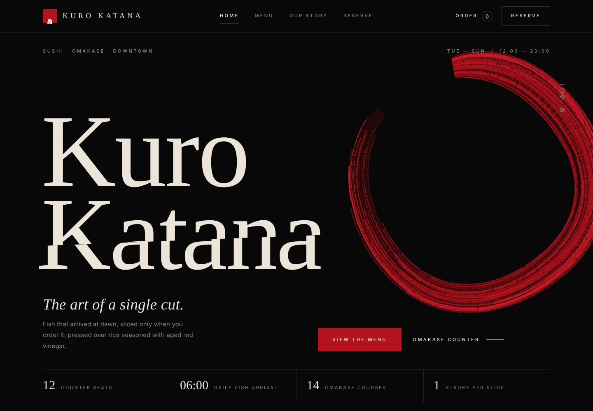
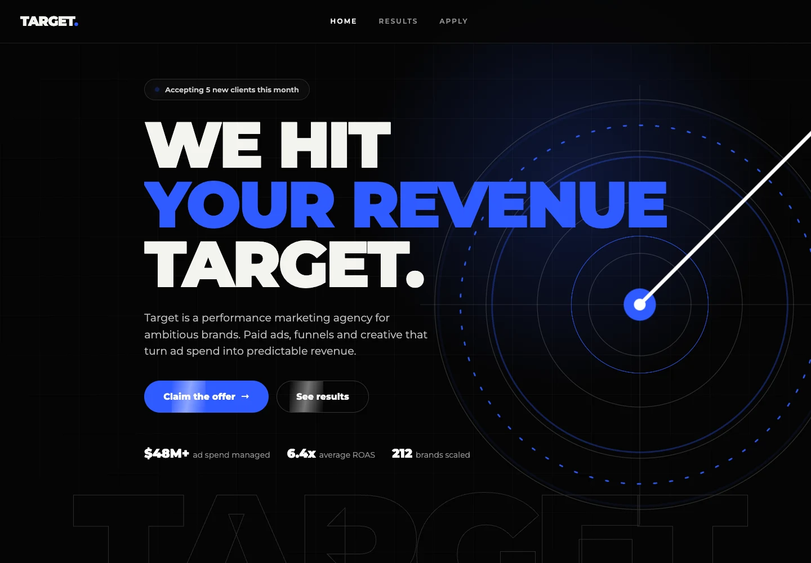
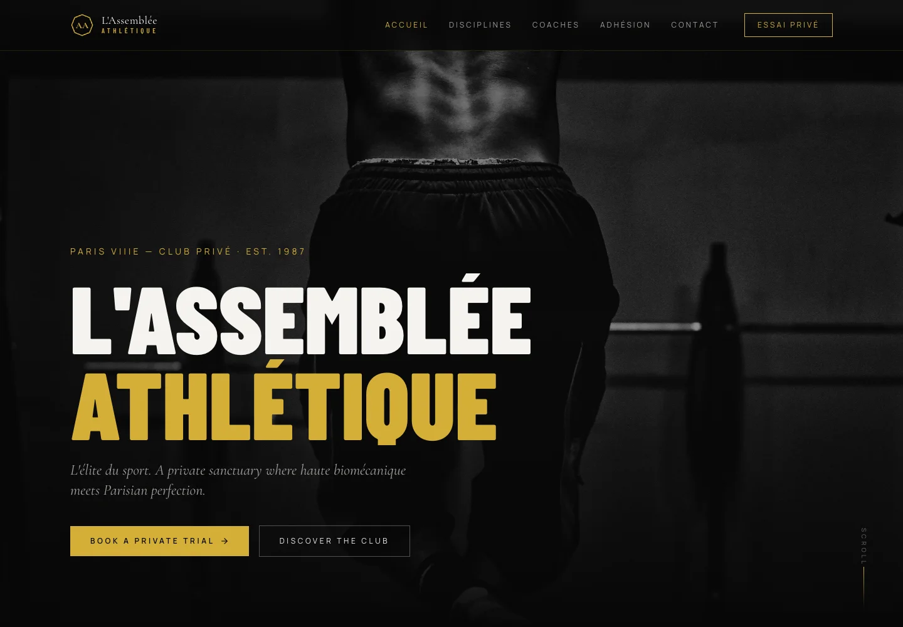
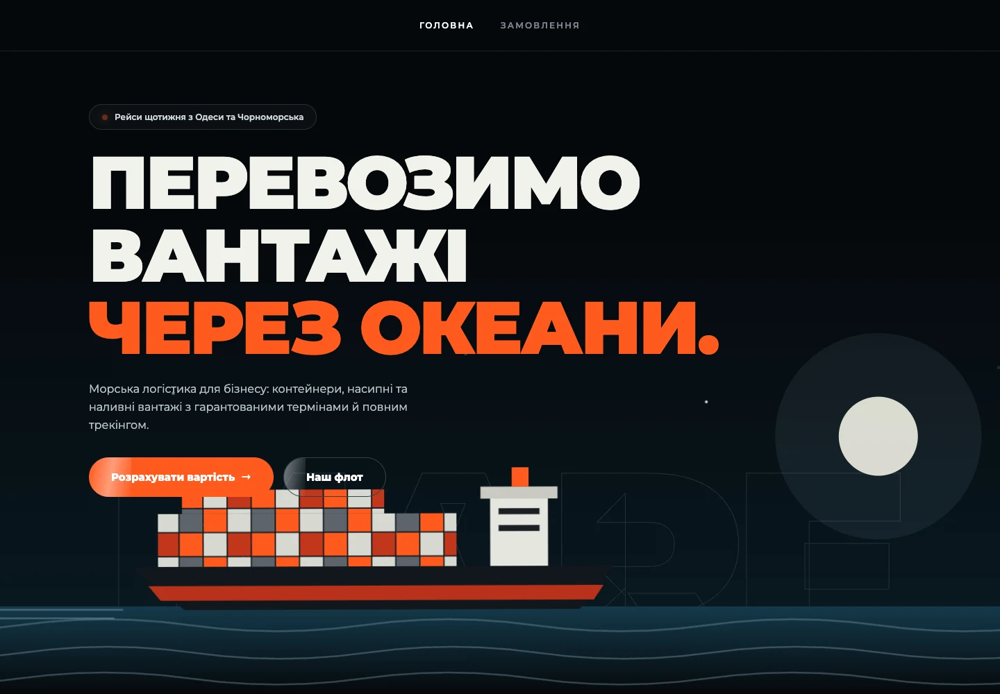
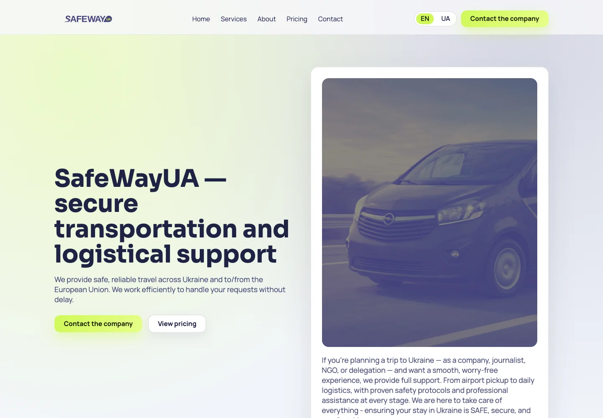
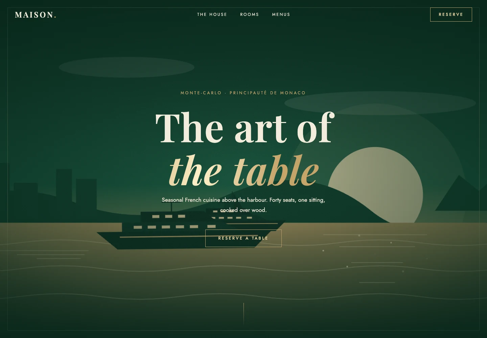
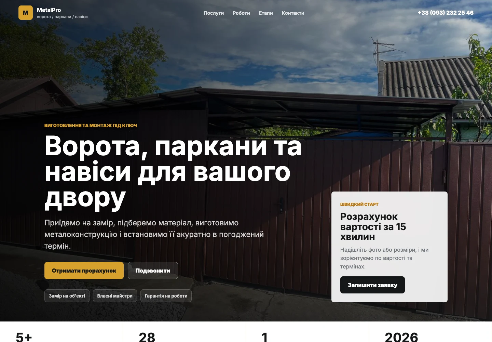
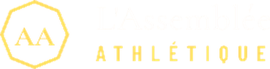

Сайт суші-бару з повним меню, онлайн-замовленням і бронюванням столика.
Незалежна digital-студія · З 2026
Сайти для бізнесу з амбіціями
Лендінги від $150 з чіткою пропозицією, що перетворює відвідувачів на звернення в Telegram, WhatsApp чи пошту. Фіксована ціна, чистий код без конструкторів, готово до запуску реклами.


Фіксована ціна · Власний код · Підтримка після запуску
↓01 / Вибрані роботи
Різні бізнеси. Різні задачі. Увага до кожного рішення.

Сайт суші-бару з повним меню, онлайн-замовленням і бронюванням столика.

Сайт морської логістичної компанії з послугами, флотом і напрямками перевезень.

Презентація послуг для тих, хто шукає надійні транспортні рішення.

Сайт ресторану в Монако з презентацією залів, меню та бронюванням столика.
Сайт маркетингової агенції з фокусом на рекламі, послугах і залученні клієнтів.

Сайт виробника воріт, парканів і навісів із послугами, прикладами робіт та формою заявки.
Сайт приватного спортивного клубу в Парижі з напрямками тренувань, тренерами та записом на пробне заняття.
Є схожа задача для вашого бізнесу?
Отримати розрахунок02 / Про студію
Fata Digital — незалежна digital-студія, що поєднує дизайн, технології та розуміння бізнес-задач. Ми створюємо цифрові рішення з увагою до деталей, зручності користувача та цілей кожного проєкту.
Починаємо з вашої пропозиції та запитань клієнтів. На цій основі будуємо структуру.
Структура, дизайн, адаптивна розробка й запуск — в одному робочому процесі.
Зручна навігація, читабельний контент і зрозумілий наступний крок на кожному екрані.
Хто ми
Fata Digital це веб-студія Катерини Руденко. Ми команда дизайнерів і розробників: ви говорите з однією людиною, а над проєктом працює вся команда, від першого дзвінка до запуску і далі.
Клієнти в Україні, Румунії, Франції та Монако.
Чому з нами
Без довгих ланцюжків. Ви завжди знаєте, хто відповідає за ваш проєкт.
Адаптивно, чисто й без конструкторів, тому сайт швидко вантажиться і росте разом з вами.
Правки, виправлення та поради, коли сайт уже працює, а не лише до оплати рахунку.
Fata Digital / Сайт як частина бізнесу
Реклама приводить людей на сайт. Але якщо за кілька секунд незрозуміло, що ви пропонуєте, чому вам варто довіряти та як замовити — потенційний клієнт іде далі. Гарної картинки замало: потрібен зрозумілий шлях до дії.
У Fata Digital ми починаємо з вашого бізнесу та запитань ваших клієнтів. Продумуємо структуру, пояснюємо цінність пропозиції й прибираємо зайві кроки до заявки або покупки. Створюємо лендінги, корпоративні сайти та інтернет-магазини з каталогом, кошиком і оформленням замовлення.
Пишемо чистий код без конструкторів. Це дає свободу в дизайні, можливість підключити потрібні сервіси та розвивати сайт разом із бізнесом. Щоб він не просто представляв вас, а допомагав клієнтам обирати вас.
Обговорити вашу задачу03 / Процес
Послідовно. Прозоро. З увагою до деталей на кожному етапі.
Обговорюємо бізнес, аудиторію, цілі та обсяг роботи.
Визначаємо зміст, порядок сторінок і шлях до звернення.
Створюємо візуальну концепцію та інтерфейс для різних екранів.
Втілюємо дизайн і підключаємо узгоджені канали для заявок.
Перевіряємо сайт, підключаємо домен і хостинг, готуємо до публікації.
Для запуску послуги, презентації продукту чи особистого бренду. Один послідовний шлях до заявки.
Для компаній, яким потрібно розкрити кілька напрямів: послуги, кейси, ціни та контакти на окремих сторінках зі зрозумілою навігацією.
Створюємо інтернет-магазини під ваш бренд, товари та процес продажу. Індивідуальний дизайн, каталог, кошик і потрібні інтеграції. Функціональність, терміни та вартість обговорюємо в особистих повідомленнях.
Логотип, кольори та типографіка як частина розробки сайту. Доступно лише разом із замовленням сайту.
Передача заявок і замовлень у Telegram, Google Таблиці, на пошту або в CRM. Менше ручної роботи — більше уваги клієнтам.
Визначимо потрібний обсяг разом.
Отримати розрахунокВідгуки / Досвід співпраці
Дуже задоволені співпрацею з Fata Digital! Дуже подобається те, наскільки легко та комфортно було працювати з командою. Завжди були на зв'язку та покроково розповідали, що саме робиться і для чого. Окремо хочеться відзначити уважність до деталей. Команда не просто виконувала наші побажання, а й сама помічала недоліки на сайті, пропонувала, як їх виправити та що можна покращити, щоб сайт був зручнішим. І найприємніше...ми вже бачимо результат! Через сайт почали надходити нових клієнтів! Дякую ще раз за професійний підхід, терпіння та чудову комунікацію!
Дякую за співпрацю! З вами дуже комфортно працювати, мені подобається те що ви ділитесь усім процесом роботи. Дуже задоволені результатами
Доброго ранку. Сайт виглядає чудово! Саме той стиль, якого хотілося. З вами так легко спілкуватися — особисто я ціную це найбільше. Дуже приємний досвід співпраці.

Замовляв десятки сайтів на продаж товару. Роблять дуже швидко. Виходять акуратні та зручні! Дуже задоволений співпрацею. Завжди можна обговорити ідеї, поставити запитання та внести зміни. Дякую за терпіння до моїх правок і за добрий результат
Дякуємо за вашу роботу! Сайт виглядає дуже преміально. Нам особливо подобається акцент на тренерах і на тому, що вирізняє наш клуб. Було дуже приємно з вами працювати.

05 / Питання та відповіді
Основне про розробку та співпрацю. Деталі вашого проєкту погоджуємо особисто.
Лендінг на 1 сторінку — від $150, бізнес-сайт до 5 сторінок — від $500, Pro до 8 сторінок — від $800. У кожному пакеті передбачено 2 раунди правок. Pro також включає дві мовні версії UA/EN та передачу заявок у CRM або Google Таблиці. Додаткова сторінка понад пакет — $100. Вартість інтернет-магазину обговорюємо в приватній розмові. Остаточний обсяг і вартість погоджуємо до початку роботи.
Залежно від обсягу невеликий проєкт може зайняти 3–5 днів або близько тижня, а платформа — орієнтовно 2–3 тижні. Остаточний термін погоджуємо після обговорення функціональності та готовності матеріалів.
Розкажіть про бізнес, аудиторію, мету сайту та потрібні функції. Якщо є логотип, тексти, фото або приклади сайтів, додайте їх до обговорення. Перелік матеріалів і наступні кроки уточнимо разом.
Так. Адаптація під телефон і планшет входить у розробку. Перевіряємо читабельність, навігацію та основні дії на різних розмірах екрана.
Так, допомагаємо з підключенням домену та хостингу. Вибір провайдера, оплату його послуг і доступи до облікових записів уточнюємо перед запуском.
Так, сайт можна розвивати: додавати сторінки, оновлювати контент і функції. Супровід після запуску коштує $30–50 на місяць; обсяг робіт погоджуємо окремо. Додаткова сторінка понад пакет — $100.
Так, працюємо з передачею заявок у Telegram, Google Таблиці, на пошту та в CRM. Конкретний сервіс, доступи й можливості інтеграції уточнюємо перед оцінкою роботи.
Так, працюємо з клієнтами з інших країн. Fata Digital працює в Україні. Мову спілкування, зручний формат співпраці та доступний спосіб оплати узгоджуємо особисто до початку роботи.
Залишилися запитання? Розкажіть про свою задачу.
Отримати розрахунокНаступний крок
Розкажіть про свій бізнес і задачу. Обговоримо формат сайту, обсяг роботи та наступні кроки.
Написати в TelegramTelegram, WhatsApp та Instagram відкривають сторонні сервіси. Повідомлення, які ви надсилаєте там, обробляються за їхніми правилами.